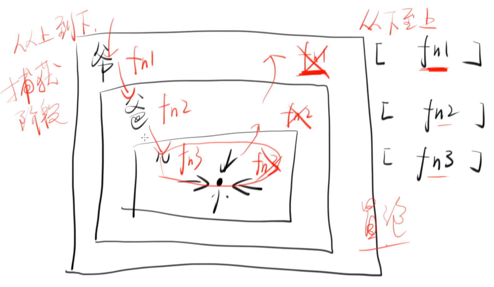

DOM Level 0
它不是一个标准，只是对各个浏览器支持的 DOM 事件的统称。
btn.onclick = function() {
console.log('hi')
}
btn.onmouseenter = function() {
console.log('mouseenter')
}
btn.onmouseleave = function() {
console.log('mouseleave')
}
DOM Level 1
把各个浏览器支持的 DOM 事件进行汇总，形成规范标准。
DOM Level 2
现在主要的规范标准。
添加了更多 DOM 事件，以及制定了事件流、事件捕获、事件冒泡和事件取消等更多标准。
btn.addEventListener('click', function() {
console.log('hi')
})
btn.addEventListener('mouseenter', function() {
console.log('mouseenter')
})
btn.addEventListener('mouseleave', function() {
console.log('mouseleave')
})
和 DOM Level 1 的区别
它们区别在于，DOM Level 1 只是一个属性，属性是唯一的，也就是说一个元素只可能有一个 onclick 属性，这意味着不能多次绑定同一事件。
btn.onclick = function() { // 将会被覆盖
console.log(1)
}
btn.onclick = function() {
console.log(2)
}
而 DOM Level 2 则是一种队列，可以对同一事件进行多次绑定。
// 不会被覆盖
btn.addEventListener('click', function() {
console.log('hi')
})
btn.addEventListener('click', function() {
console.log('hello')
})
使用 removeEventListener 可以移除队列中的事件绑定。
function f1() {
console.log('hi')
}
function f2() {
console.log('hello')
}
btn.addEventListener('click', f1)
btn.addEventListener('click', f2)
btn.removeEventListener('click', f1)
// 'hello'
实现 .one()
使用 removeEventListener 还可以实现对事件绑定仅监听一次。
function f1() {
console.log('hi')
btn.removeEventListener('click', f1)
}
btn.addEventListener('click', f1)
// 只在第一次点击 btn 时才会打印出 'hi'
事件模型（冒泡和捕获）
removeEventListener 还可以接受第三个参数：
- 如果是
false，那么会进行事件冒泡。 - 如果是
true，那么会进行事件捕获。
在下图事件流中，会询问两遍（先捕获后冒泡），根据第三个参数来确定具体在哪个阶段执行函数。

阻止事件冒泡
e.stopPropagation()
DOM Level 3
没有再对 DOM 事件进行更多的修改。